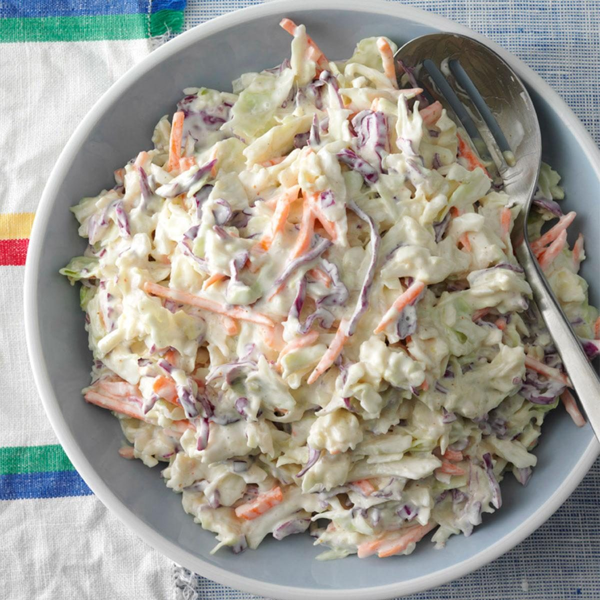

Home
Creamy Coleslaw

Description
A traditional coleslaw recipe that's easy to make with a
bag of ready-made coleslaw mix and a sweet and creamy
homemade dressing that has lemon and horseradish for an
added kick.
Ingredients
- 1 cup mayonnaise
- ¼ cup white sugar or to taste
- 2 tablespoons seasoned rice wine vinegar
- 1 ½ tablespoons lemon juice
- 1 tablespoon prepared horseradish
- ½ teaspoon onion powder
- ½ teaspoon dry mustard
- ½ teaspoon celery salt
- ½ teaspoon salt
- ½ teaspoon ground black pepper
- 1 (28 ounce) package coleslaw mix
Steps
- Gather all ingredients.
- Whisk mayonnaise, sugar, vinegar, lemon juice, horseradish,
onion powder, dry mustard, celery salt, salt, and pepper in
a large mixing bowl until sugar has dissolved.
- Fold coleslaw mix into dressing until well combined.